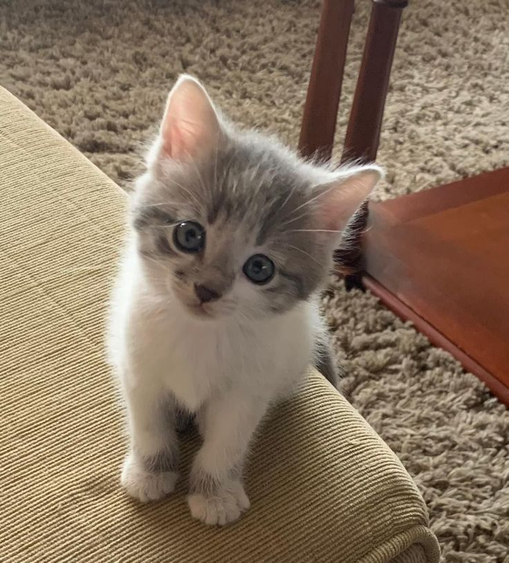

Информация об авторе
Рамазанов Мухамед Хаирбегович
ЭФБО-16-24
Обо мне: Я родился в Москве в 2005 году. Каждый год я переезжал между Москвой и Дагестаном. После окончания школы я поступил в МГТУ им. Баумана, но проучился там недолго...
Спать
Кушать
Отдыхать
Знаю квантовую физику
Мой опыт работы:
Опыт 1
Солил огруцы, помидоры, чеснок.
Солил огруцы, помидоры, чеснок.
Опыт 2
Работал на стройке.
Работал на стройке.
Опыт 3
Подрабатывал репититором.
Подрабатывал репититором.